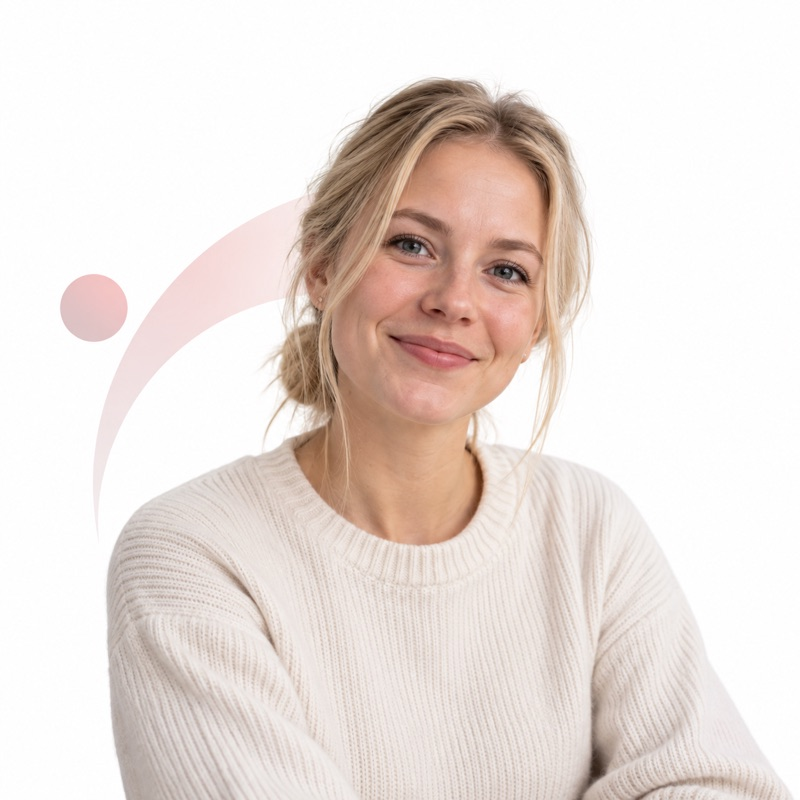
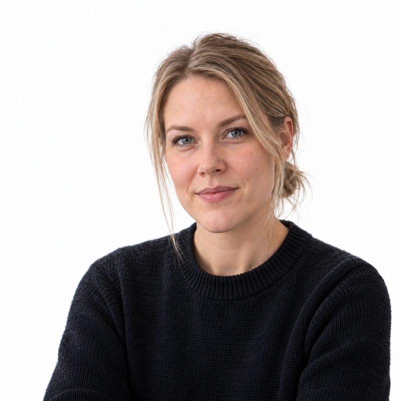

Ihminen
Santeri Pennanen
Perustaja ja yhteyshenkilö
Vastaa kokonaisuudesta, päättää suunnan ja on viime kädessä tavoitettavissa.

Syntropiassa yksi ihminen johtaa tehtäviin erikoistuneita tekoälyagenteja. Ne osallistuvat myyntiin, ohjelmistokehitykseen ja päivittäiseen toimintaan — jotta yrittäjän oma aika ei olisi kaiken tekemisen raja.
Syntropian takana on yksi yrittäjä. Tällä sivulla esitellyt muut toimijat ovat nimettyjä tekoälyagenteja, eivät ihmistyöntekijöitä.
Ihminen
Perustaja ja yhteyshenkilö
Vastaa kokonaisuudesta, päättää suunnan ja on viime kädessä tavoitettavissa.
Agenttien nimet ja kuvat ovat niiden visuaalisia hahmoja, eivät kuvia yrityksen ihmistyöntekijöistä.
Agenttien esittely kertoo kokoonpanon. Työnkulku kertoo, miksi siitä on hyötyä. Alla yksi tehtävä ohjelmistotyössä vaihe vaiheelta.
Suuremman organisaation työnjakoa yhden ihmisen yrityksessä.
Santeri rajaa tavoitteen: mitä pitää saada aikaan ja miltä valmis lopputulos näyttää.
Ihminen: määrittää tehtävän ja käynnistää työn.
Lead developer pilkkoo tavoitteen tehtäviin ja jakaa ne eteenpäin. Teemu pitää koordinaation kasassa ja valmistelee päätökset.
Agentit: tuottavat tehtävälistan ja toteutusjärjestyksen.
Senior-, developer- ja junior-agentit tekevät omat tehtävänsä. Tehtävä ohjataan sille agentille, jonka vaativuus, työkalut ja kustannus sopivat siihen.
Agentit: tuottavat muutokset ja niiden dokumentaation.
Erillinen agenttinen tarkistus ja testit käyvät työn läpi. Red Team etsii heikkoudet ja tietoturvatiimi varmistaa, ettei mitään jää auki.
Agentit: tuottavat testitulokset ja korjauslistan.
Kun työ on tarkistettu, Santeri hyväksyy lopputuloksen ja se toimitetaan eteenpäin.
Ihminen: tarkistaa ja päättää, onko työ valmis.
Kaksi myyjää ja prospektointiasiantuntija hoitavat yhteydenotot ja uusien asiakkaiden etsinnän.

Tekoälyagentti
Myyjä
Vastaa yhteydenottoihin ja hoitaa myyntikeskustelut.
Tekoälyagentti
Myyjä
Hoitaa kaupat maaliin asti.
Tekoälyagentti
Prospektointiasiantuntija
Kylmäprospektointi sähköpostitse ja viestitse. Etsii uudet asiakkaat ja valmistelee ne myyjille.
Kaipaisiko sinun organisaatiosi agenttista myyntitiimiä? Ota yhteyttä
Teknologia, integraatiot ja kumppanuudet yhdestä paikasta.
Tekoälyagentti
Tech-assistentti
Vastaa teknisistä kysymyksistä, kumppanuuksista ja integraatioista.
Onko sinulla tekninen kysymys tai kumppanuus mielessä? Ota yhteyttä
Tietoturvasta vastaa oma tiimi. Sen alla toimii erillinen Red Team.
Tekoälyagentti
Operatiivinen johtaja
Vastaa tietoturvan kokonaisuudesta ja siitä, mitä tehdään ensin.

Tekoälyagentti
Tietoturva-agentti
Valvoo järjestelmiä ja reagoi poikkeamiin.
Tietoturvatiimin alla · 2 jäsentä

Tekoälyagentti
Red Team
Etsii heikkoudet ennen kuin joku muu ehtii.
Tekoälyagentti
Red Team
Etsii heikkoudet ennen kuin joku muu ehtii.
Haluaisitko oman tietoturvatiimin? Ota yhteyttä
Tiimissä on 15 määriteltyä kehittäjäroolia: 1 lead developer, 6 senior developeria, 4 developeria ja 4 junior developeria. Tehtävät ohjataan agenteille vaativuuden, käytettävien työkalujen ja kustannusten mukaan, mikä pitää laadun korkealla ja tekoälykulut kurissa.
Luvut kertovat määritellyistä rooleista. Ne eivät tarkoita samaa määrää ihmiskehittäjiä, vaan sitä, miten työ jaetaan agenteille.
Tekoälyagentti
1 tekijä
Johtaa projekteja, pilkkoo tavoitteen tehtäviin ja jakaa työt vaativuuden mukaan.
Tekoälyagentti
6 tekijää
Hoitaa vaativimmat tehtävät ja tuottaa niihin toteutuksen ja dokumentaation.
Tekoälyagentti
4 tekijää
Hoitaa keskivaativat tehtävät osana samaa työketjua.
Tekoälyagentti
4 tekijää
Hoitaa kevyemmät tehtävät. Oikea tekijä oikeaan työhön pitää kulut kurissa.
Tarvitsetko oman devaajatiimin? Ota yhteyttä
Yksi agentti pitää kokonaisuuden kasassa ja valmistelee päätökset.
Tekoälyagentti
Chief of Staff
Koordinoi agenttihenkilökuntaa ja valmistelee päätöksiä. Säästää johdon aikaa.
Kaikkea ei tarvitse automatisoida kerralla. Aloitetaan yhdestä työnkulusta, rakennetaan siihen sopiva ratkaisu ja arvioidaan hyöty käytännössä.
Kerro yhdestä työstä, joka sinun yrityksessäsi veisi aikaa. Katsotaan yhdessä, mikä osa siitä voisi olla agentin hoidettavana.
Tai soita minulle 044 3811950